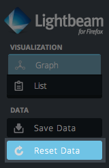

Section 2. Writing the Web
Cookies and Third-Party Tracking
Made by Laura Hilliger, Ben Moskowitz, Atul Varma, Alina Hua,
Stacy Martin, Matthew Willse, and Shane Caraveo. Remixed for Clubs by Mozilla.
Using a free and open source tool called Mozilla Lightbeam, you can help visually show learners how cookies and third-party trackers are monitoring them as they perform their own everyday tasks on the web. Help learners manage and protect their data trail by having them race to see who can gather the most trackers on their team's Lightbeam graph.
45 mins to 1 hour
-
10
minLearn about Cookies with Do Not Track
Do Not Track is a personalized documentary series about privacy and the web economy.
Watch and interact with Do Not Track Episode 2: Breaking Ad and discuss how cookies serve trackers with your learners. -
5
minUse Lightbeam to Track the Trackers
Lightbeam is a free+open source Firefox add-on that uses interactive visualizations to show you the first and third party sites you interact with on the Web. As you browse, Lightbeam reveals the full depth of the Web today, including parts that are not transparent to the average user.
-
5
minsInstall Lightbeam
Have learners install Lightbeam
 Ask Learners:
Ask Learners:- Is all tracking bad?
- Can you think of an instance when you're ok with sharing your data?
- What kind of organizations might track you across the Web?
15
minsSee Who's Tracking You


Ask learners to visit 5 of their favorite websites.
Lightbeam will create a record of events for every site you visit and every third party site that is stored locally on your browser.
Have learners show Lightbeam by clicking the icon in the Add-On bar. Explain that Lightbeam visually graphs their movement across the web to highlight the interactions between sites you intentionally visit and the third parties.
Lightbeam will continue to add to your graph as you browse the Web. Have learners observe how many connections they've created.
10
minsTRACKING RACE!
Form groups and have each groups use one computer. Instruct the groups to reset the data on their Lightbeam results.
Set a timer for 5 minutes, and have groups race to see who can get the most trackers on their Lightbeam graph. They'll need to browse to as many sites as possible to win!
Let the winning group give an "Award Acceptance Speech".
5
minsReflect
Have learners answer questions about their experience:- Which trackers are the same?
- What was surprising?
- Which site that you visit has the most trackers?
- Why should or why shouldn't everyone should have the tools to investigate who collects data on them?
Talk about how the Lightbeam add-on and database server aims to raise awareness, promote analysis and, ultimately, affect policy change in the areas of tracking and privacy.